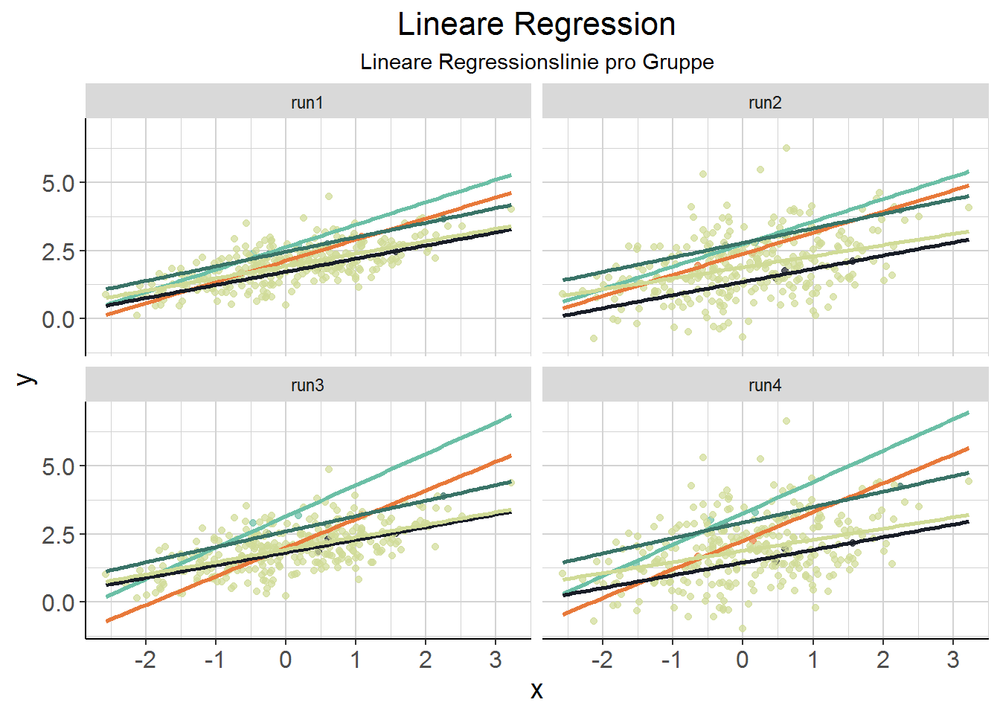
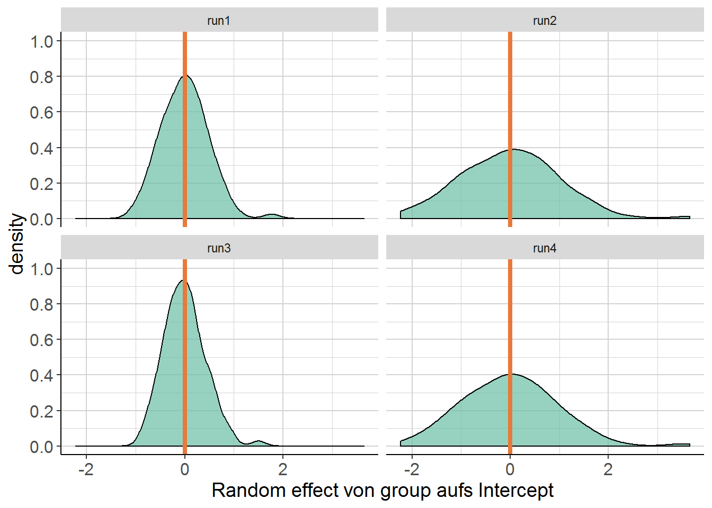
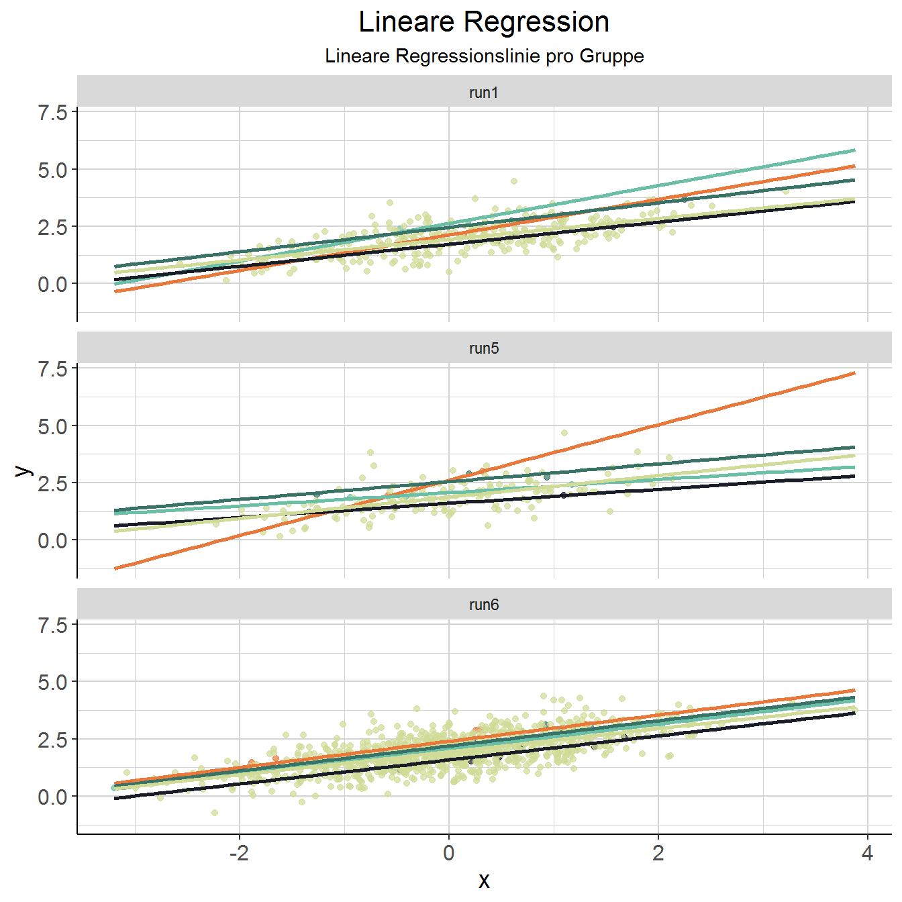
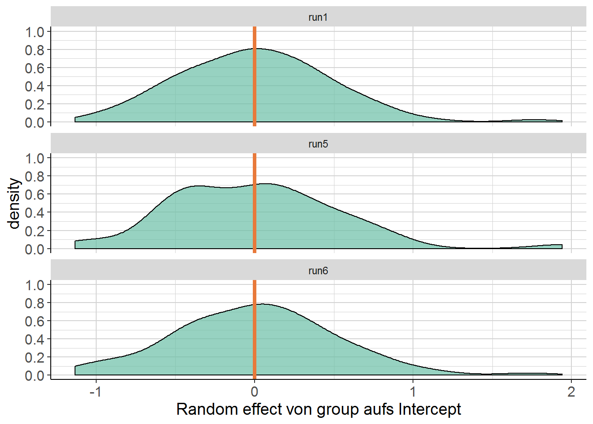

3.3 Simulationen
Zum besseren Verständnis: Rumspielen mit verschiedenen Parametern von simulierten Daten und das entsprechende Resultat im mixed model. In den Notes anstatt in den Übungen, weil echt hilfreich. Übersicht aller Modelle und Density Plots nebeneinander in der Tabelle unten.
“In what follows we’ll change various aspects of the data, then rerun the model after each change […]. For each note specifically at least one thing that changed in the results.”
0. First calculate or simply eyeball the intraclass correlation coefficient:
\[\frac{\textrm{random effect variance}}{\textrm{residual + random effect variance}}\] In addition, create a density plot of the random effects.
3.3.1 Run 1 - default
# vorgegebener Code siehe mixed_models_basics.Rmd
# Aber das geht so nicht - das muss erst mal in eine Funktion
rand_int_sim <- function(Ngroups = 100, NperGroup = 3, sdRandIntercept = .5,
sdError = .25, sdFixedEffect = .5, AvIntercept = 2){
N <- Ngroups * NperGroup
groups <- factor(rep(1:Ngroups, each = NperGroup))
u <- rnorm(Ngroups, sd = sdRandIntercept)
e <- rnorm(N, sd = sdError)
x <- rnorm(N)
y <- AvIntercept + sdFixedEffect * x + u[groups] + e
return(data.frame(x = x, y = y, groups = groups))
}Which of the above represent the fixed and random effects?
x = fixed effect; u[groups] = random effect
set.seed(2806)
run1 <- rand_int_sim()
model1 <- lmer(y ~ x + (1|groups), data = run1)
tidy(model1) %>%
mutate_at(.vars = c("estimate", "std.error", "statistic"),
.funs = force_decimals) %>%
kable() %>%
kable_styling("striped")| effect | group | term | estimate | std.error | statistic |
|---|---|---|---|---|---|
| fixed | NA | (Intercept) | 1.95 | 0.05 | 37.89 |
| fixed | NA | x | 0.50 | 0.02 | 32.65 |
| ran_pars | groups | sd__(Intercept) | 0.50 | NA | NA |
| ran_pars | Residual | sd__Observation | 0.23 | NA | NA |
Einmal die Tabelle hier zur Veranschaulichung, alles Weitere in der Vergleichstabelle für alle Läufe unten. Intraclass Correlations und Density Plots ebenfalls unten.
Hier sehen wir aber zunächst, dass sich die von uns spezifizierten Parameter genau im Modell ablesen lassen: Die Residual Standard Deviation liegt bei .23 - wir haben dem error term e in der Simulation ja .25 zugewiesen. x wird (fast) genau wie spezifiziert auf .5 geschätzt. Und das Intercept passt auch: 1.95 (übergeben: 2). Das Intercept der groups hat eine Standard Deviation von .50 - passt auch beinahe genau. Bin noch nicht vollkommen sicher, wie ich die aufgeklärte Varianz beurteilen soll.
tb_intracl <- as.data.frame(formatVC(VarCorr(model1), comp = c("Var", "Std"))) %>%
mutate(Variance = as.numeric(as.character(Variance)))
intracl1 <- (tb_intracl$Variance[1] / sum(tb_intracl$Variance)) * 100Intraclass correlation: Groups klären \(81.99\) \(\%\) der Gesamtvarianz auf.
3.3.2 Run 2 - Different random effect variance
1. Change the random effect variance/sd and/or the residual variance/sd and note your new estimate of the ICC, and plot the random effect as before.
set.seed(2806)
run2 <- rand_int_sim(sdRandIntercept = 1)
model2 <- lmer(y ~ x + (1|groups), data = run2)Siehe Zusammenfassung unten: Im Prinzip sind alle Werte dieselben bis auf die Standard Deviation für das Intercept der Groups. Der ist jetzt bei 1 (vorher .50), und das ist ja auch das Einzige, was ich geändert habe. Interessanterweise gibt es leichte Abweichungen in den anderen Werten. Das sollte nicht daran liegen, dass ich eingangs zwar denselben Seed gesetzt habe, aber den Prozess des Samplings dann durch Änderungen in den Parametern vor dem Sampling des Intercepts verändert habe. Das sollte dann passieren, wenn ich das N ändere und somit der Startpunkt (vom Seed aus) für das Sampling des Intercepts ein anderer ist. Aber wenn ich hier keinen Denkfehler mache, wurde das Intercept leicht durch die Varianz des random effects (auf das Intercept) beeinflusst … ?
Intraclass correlation: Groups klären \(94.94\) \(\%\) der Gesamtvarianz auf. Was mega krass ist. Ergibt natürlich Sinn, weil ich die Varianz der Gruppen brutal hochgeschraubt habe. Ich verstehe nur noch nicht ganz, wieso die fixed effects hier nicht einbezogen werden, sondern nur der Effekt von group durch group \(+\) residual gerechnet wird? Hat vermutlich damit zu tun, dass der Effekt von \(x\) ja mit oder ohne random intercept derselbe bleibt.
3.3.3 Run 3 - Different residual variance
set.seed(2806)
run3 <- rand_int_sim(sdError = .5)
model3 <- lmer(y ~ x + (1|groups), data = run3)Siehe Zusammenfassung unten. Vergleich zum Default Model 1: Geändert hat sich nur die Residual Standard Deviation: Von .23 auf .47.
Intraclass correlation: Groups klären \(51.75\) \(\%\) der Gesamtvarianz auf. Also viel weniger als in Lauf 1 oder 2, weil das Residual natürlich umso mehr Varianz aufklärt.
3.3.4 Run 4 - Different random effect and residual variance
set.seed(2806)
run4 <- rand_int_sim(sdRandIntercept = 1, sdError = .5)
model4 <- lmer(y ~ x + (1|groups), data = run4)Siehe Übersicht unten: Das sind jetzt die beiden Veränderungen aus Run 2 und 3 zusammengeführt.
Intraclass correlation: Groups klären \(81.99\) \(\%\) der Gesamtvarianz auf. Interessanterweise etwa so viel wie das default Modell 1.
3.3.5 Übersicht
- Run 1: default
- Run 2: different random effect variance
- Run 3: different residual variance
- Run 4: different random effect and residual variance
| effect | group | term | run1 | run2 | run3 | run4 | run1 | run2 | run3 | run4 |
|---|---|---|---|---|---|---|---|---|---|---|
| fixed | NA | Intercept | 1.95 | 1.90 | 1.94 | 1.89 | 0.05 | 0.10 | 0.06 | 0.10 |
| fixed | NA | x | 0.50 | 0.51 | 0.50 | 0.51 | 0.02 | 0.02 | 0.03 | 0.03 |
| random | groups | SD Intercept | 0.50 | 1.01 | 0.48 | 0.99 | NA | NA | NA | NA |
| random | residual | SD Observation | 0.23 | 0.23 | 0.47 | 0.46 | NA | NA | NA | NA |
| run1 | run2 | run3 | run4 |
|---|---|---|---|
| 81.99 | 94.94 | 51.75 | 81.99 |
3.3.5.1 Density Plots
Orange ist der Mittelwert, der 0 ist. Spannend aber, wie asymmetrisch die sind. Run 2: Höhere Varianz des Random Effects bedeutet mehr Unsicherheit, wo er liegt? Run 3: Weil das Residual größer ist, schätzen wir den Effekt der Gruppe aufs Intercept eher auf 0? Rund 4: Sieht eher aus wie der aus Run 2. Die größere Varianz des Random Effects hat mehr Einfluss als die größere Residual Standard Deviation?

3.3.5.2 Lineare Regressionen
Problem beim Plotten: Die Daten bestehen aus 100 3er-Grüppchen. Es ist nicht so übersichtlich, den Plot danach zu gruppieren. Daher hier mal vier rausgegriffen und der Rest zusammengefasst. Jede Gruppe hat eine lineare Regressionslinie bekommen. (Blau/orange vier herausgepickte Gruppen, grün-beige die restlichen Gruppen zusammengefasst.) Interessanterweise sieht es hier so aus, als wären auch ein Random Slopes pro Gruppe angemessen.

3.3.5.3 Mixed Models

D.h. wenn man jede Gruppe für sich linear schätzt (was geom_smooth mit method = "lm" hier ja tut), ergibt sich ein anderes Bild als durch das mixed model. Wir wissen ja durch die Simulation, dass es keine random slopes pro Gruppe gibt (vermutlich würde auch das lineare Modell ähnliche Schätzungen liefern, wenn es nicht nur drei Datenpunkte pro Gruppe wären). Schon krass irgendwo, dass ein mixed Model viel mehr ist (sein kann?) als einfach nur ein lineares Modell pro Gruppe. Man beachte, dass die zusammengefasste Schätzung für die restlichen Gruppen einen anderen Slope hat, weil hier die unterschiedlichen Intercepts (minus die der gehighlighteten Gruppen) alle aufeinander prallen.
Man bedenke auch: Der angenommene Effekt für x ändert sich ja nicht dadurch, dass ein random Intercept dazu kommt. Während ich bei den linearen Regressionsplots eine lineare Regression innerhalb jeder Gruppe rechne, verschiebe ich beim mixed Model die “mittlere” lineare Regression an der y-Achse entlang (oder?).
Siehe: Vergleich von mixed models mit random Slopes vs. lineare Regressionen pro Gruppe ein Kapitel weiter.
3.3.6 Veränderung der Gruppengrößen
2. Reset the values to the original. Change Ngroups to 50. What differences do you see in the confidence interval estimates?
3. Set the Ngroups back to 100. Now change NperGroup to 10, and note again the how the CI is different from the base condition.
- Run 1:
NGroups= 100,NperGroup= 3 - Run 5:
NGroups= 50,NperGroup= 3 - Run 6:
NGroups= 100,NperGroup= 10
| effect | group | term | run1 | run5 | run6 | run1 | run5 | run6 |
|---|---|---|---|---|---|---|---|---|
| fixed | NA | Intercept | 1.95 | 1.90 | 1.95 | 0.05 | 0.08 | 0.05 |
| fixed | NA | x | 0.50 | 0.50 | 0.51 | 0.02 | 0.02 | 0.01 |
| random | groups | SD Intercept | 0.50 | 0.56 | 0.51 | NA | NA | NA |
| random | residual | SD Observation | 0.23 | 0.25 | 0.25 | NA | NA | NA |
| run1 | run5 | run6 |
|---|---|---|
| 81.99 | 83.77 | 81.30 |


Die vorherige Vermutung bestätigt sich: Je mehr Datenpunkte pro Gruppe es gibt, desto näher kommt die Schätzung durch lineare Regressionen pro Gruppe an die des Mixed Models dran.

3.3.6.1 Confidence Intervals
| 2.5 % | 97.5% | 2.5 % | 97.5% | 2.5 % | 97.5% | |
|---|---|---|---|---|---|---|
| group | 0.43 | 0.58 | 0.45 | 0.69 | 0.45 | 0.59 |
| residual | 0.21 | 0.26 | 0.21 | 0.28 | 0.24 | 0.26 |
| (Intercept) | 1.85 | 2.05 | 1.74 | 2.06 | 1.85 | 2.05 |
| x | 0.47 | 0.53 | 0.45 | 0.55 | 0.49 | 0.52 |
- group = Standardabweichug vom Fixed Effect durch group
- residual = Residual Standard Deviation von group
Eine kleinere Gesamtstichprobe vergrößert die Unsicherheit über die Auswirkung von group, aber sonst nichts. Ein größeres n pro Gruppe (da das Gesamt-N gleich bleibt also weniger Gruppen) verändert … gar nichts?